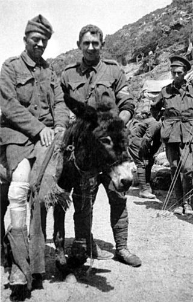
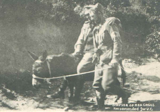
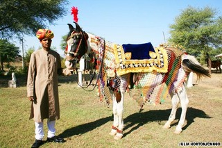
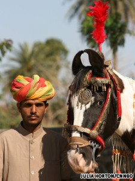
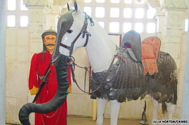
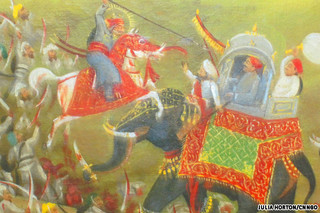
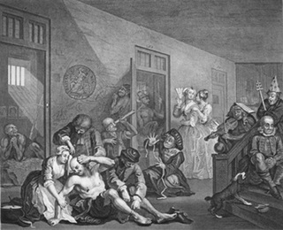

Mon, 26 Mar 2012 01:57:13 PDT
El joven John Simpson y su burro, los héroes de Galípoli
El joven John Simpson y su burro, los héroes de Galípoli
John Simpson Kirkpatrick nació en South Shields (Inglaterra) en 1892; era un muchacho solitario, siempre rodeado de animales y que desde muy joven ya comenzó a dar muestras de su carácter: con sólo 13 años salvó a dos niños que se estaban ahogando en el río Tyne. Cuando tenía 17 años falleció su padre y [...]El joven John Simpson y su burro, los héroes de Galípoli escrito por Javier Sanz en: Historias de la Historia
También puedes seguirnos en Twitter, Facebook y Google+
John Simpson Kirkpatrick nació en South Shields (Inglaterra) en 1892; era un muchacho solitario, siempre rodeado de animales y que desde muy joven ya comenzó a dar muestras de su carácter: con sólo 13 años salvó a dos niños que se estaban ahogando en el río Tyne. Cuando tenía 17 años falleció su padre y asumió el papel de sostén de su madre y hermana. Un año más tarde se enroló como fogonero en el buque de la marina mercante SS Yedo. Durante el viaje a Australia se dio cuenta de que aquello no era lo suyo: demasiado tiempo encerrado sin ver la luz del sol, una férrea disciplina… Cuando llegaron a Newcastle (Australia) desertó. En Australia trabajó cortando caña, en las minas de carbón y, sobre todo, como pastor. A pesar de no ganar mucho, seguía enviando dinero a su familia aunque a él apenas le quedase para sobrevivir. Tras el estallido de la Primera Guerra Mundial, John se alistó en la ANZAC (Australian and New Zealand Army Corps) y fue asignado al Cuerpo Médico como camillero. Nada se le había perdido a John en aquella guerra, para él era sólo una forma de poder regresar a casa… el convoy de la ANZAC, con el SS Medic donde él fue embarcado, partía hacia Europa.
Pero todo se torció… el convoy fue desviado a Egipto y unos meses más tarde a Turquía. La batalla de Galípoli, también llamada batalla de los Dardanelos, fue una operación combinada, en forma de desembarco, entre británicos, franceses y la ANZAC para controlar el estrecho de los Dardanelos. Algún error de cálculo y la bisoñez de los mandos dejaron a las tropas aliadas atrapadas entre el mar y las colinas en poder de los otomanos. El gran número de bajas obligó a reducir el número de camilleros por unidad a dos, y Simpson, que siempre se entendió mejor con los animales que con las personas, decidió, por su cuenta y riesgo, que su compañero sería un burro que había encontrado en la ladera de la montaña al que llamó Duffy. Con Duffy se dedicó a llevar los heridos desde el frente hasta la playa y cuando regresaba a recoger más, llevaba agua a los soldados.

Todos los días desde las 6.30 de la mañana hasta que anochecía, entre disparos y metralla, atravesaba el campo de batalla para recoger a los heridos. Como actuaba por su cuenta, incluso dormía y comía con los soldados indios de una unidad de artillería que tenían mulas, su oficial al mando le amenazó con arrestarle por indisciplina… cuando vio la popularidad y respeto que se había ganado entre la tropa se olvidó del tema. Durante 24 días, y unas 15 veces al día, Simpson y Duffy estuvieron atravesando aquel infierno hasta que… el 19 de mayo de 1915, con apenas 22 años, un francotirador acabó con su vida. Habían rescatado más de 300 soldados.
Fue recomendado para varios galardones pero, hipócritamente, se le denegaron por sus actos de indisciplina. Aún así, en años posteriores y como reconocimiento a su labor, la imagen de Simpson con Duffy y un soldado herido apareció en sellos, billetes y monedas.

Fuentes e imágenes: Simpson and his donkey, Australian War Memorial,Artículos relacionados:
- ¿Por qué los nazis llevaban un tatuaje en la axila?
- El ejército fantasma
- Las temidas monjas paracaidistas de Hitler
- El día que unos japoneses en bicicleta humillaron al ejército británico
- La victoria más humillante para los marines.
El joven John Simpson y su burro, los héroes de Galípoli escrito por Javier Sanz en: Historias de la Historia
También puedes seguirnos en Twitter, Facebook y Google+
Thu, 22 Mar 2012 03:00:40 PDT
Cuando las prostitutas gobernaban la Iglesia
Cuando las prostitutas gobernaban la Iglesia
En la historia del papado al período comprendido entre el nombramiento de Sergio III en 904 y la muerte de Juan XII en 964 se le denomina Saeculum Obscurum (la edad oscura) aunque es más conocido como Normas de las putas o Pornocracia tal como recogió en sus Anales Eclesiásticos el cardenal e historiador del [...]Cuando las prostitutas gobernaban la Iglesia escrito por Javier Sanz en: Historias de la Historia
También puedes seguirnos en Twitter, Facebook y Google+
En la historia del papado al período comprendido entre el nombramiento de Sergio III en 904 y la muerte de Juan XII en 964 se le denomina Saeculum Obscurum (la edad oscura) aunque es más conocido como Normas de las putas o Pornocracia tal como recogió en sus Anales Eclesiásticos el cardenal e historiador del siglo XVI Cesare Baronio. Durante este período los Papas estuvieron bajo la influencia de dos prostitutas: Teodora y Mazoria, madre e hija.
Tras la muerte de León V, apoyado por la familia Spoleto y por su primo Teofilacto, senador y magister militum de Roma, se elige nuevo Papa a Sergio III en 904. Como recompensa Teofilacto fue nombrado vestararius (el que controlaba las finanzas) y más tarde cónsul, y su esposa senatrix de Roma. Teodora, la esposa de éste, también apoyó al nuevo Papa… pero desde la cama, donde le ayudaba a tomar las decisiones más importantes. Con 15 años, y siguiendo los pasos de la madre, Mazoria también pasó por la cama del Papa con el que llegó a tener un hijo, Juan. Tras la muerte de Sergio III, Teodora nombraría a los tres siguientes: Anastatius III (911-913), Lando (murió después de 6 meses) y a Juan X en 914. Dos años más tarde fallecía Teodora y Mazoria tomaba el relevo.
Además de Juan, Mazoria tuvo otro hijo, Alberico II, con su primer marido Alberico I de los Spoleto. Los discrepancias con Juan X llegaron al poco tiempo y utilizando el poder de su segundo marido, Guy de Toscana, lo encarceló y falleció en extrañas circunstancias mientras estaba en prisión. Igual que hizo su madre eligió a los tres siguientes Papas: León VI (durante siete meses en 928), Esteban VII (928-931) y a Juan XI (931-935) (el hijo que había tenido con Sergio III). Su hijo, otorgándole el poder absoluto, la nombró senatrix Patricia Romanorum. Tras el fallecimiento de su segundo marido, Mazoria intentó seguir ganando poder casándose con Hugo, rey de Italia, pero había un pequeño gran problema… pequeño porque aunque necesitaba anular su matrimonio su hijo era el Papa y gran porque su otro hijo, Alberico II, lideró la oposición a aquella boda.

Boda de Hugo y Mazoria
Alberico II asumió el título de príncipe y senador de los romanos y gobernó Roma. El día de los esponsales de su madre con el rey Hugo mandó apresarla y la encerró hasta su muerte en 936. El hijo asumió el papel de la madre y continuó eligiendo Papas hasta que en 955 nombró a su propio hijo, y por tanto nieto de Mazoria y bisnieto de Teodora, Juan XII que ocupará el trono de San Pedro hasta 964.
Fuentes: Italy and the Papal Pornocracy, Saeculum Obscurum, Christian Pornocracy & The Rule of the WhoreArtículos relacionados:
- Papas que murieron por razones sexuales
- El Papa que fue exhumado para ser juzgado
- El Papa que protagonizó una campaña publicitaria… de vino de coca
- Los Templarios siguen guerreando.
Cuando las prostitutas gobernaban la Iglesia escrito por Javier Sanz en: Historias de la Historia
También puedes seguirnos en Twitter, Facebook y Google+
Tue, 20 Mar 2012 02:30:39 PDT
Caballos preparados para luchar contra elefantes
Caballos preparados para luchar contra elefantes
Rajastán es en la actualidad el mayor de los estado del noroeste de la India. Antiguamente fue conocida como Rajput, el reino de los rajput, ya que desde el siglo VI estuvo gobernado por la casta de guerreros rajput, término sanscrito que significa hijos del rey. La conquista de los musulmanes en el siglo XII, [...]Caballos preparados para luchar contra elefantes escrito por Javier Sanz en: Historias de la Historia
También puedes seguirnos en Twitter, Facebook y Google+
Rajastán es en la actualidad el mayor de los estado del noroeste de la India. Antiguamente fue conocida como Rajput, el reino de los rajput, ya que desde el siglo VI estuvo gobernado por la casta de guerreros rajput, término sanscrito que significa hijos del rey. La conquista de los musulmanes en el siglo XII, con la posterior creación del sultanato del Delhi, y las incursiones del mogol Tamerlán en el siglo XIV, el subcontinente indio quedó dividido en varios Estados: unos musulmanes, otros formando parte del Imperio Mogol… hasta que a mediados del siglo XIX, la mayor parte de la India estaba bajo el control de la Compañía Británica de las Indias Orientales. Durante todos estos siglos de incursiones, conquista y dominación el estado de Rajastán permaneció independiente, en diferentes grados, gracias a los aguerridos rajputs… y a sus caballos Marwari.

Cada rajput criaba y educaba a su propio caballo, siempre de la raza Marwari, y que luego sería su compañero en la batalla. Esta raza se ha caracterizado por su inteligencia, lealtad y valentía. Además, físicamente, tiene una marca distintiva… orejas puntiagudas con las puntas mirando hacia dentro incluso llegando a tocarse.

Cuando los rajput tuvieron que hacer frente a los elefantes mogoles decidieron tirar de imaginación… dotaron a sus caballos de una especie de trompa para engañar a los elefantes adultos y hacerles creer que eran elefantes jóvenes, lo que les permitiría acercarse hasta ellos sin ser atacados.

Rajput y su Marwari-elefante
En la Batalla de Haldighati (1576) se enfrentaron las fuerzas del Maharana Pratap, gobernante de Mewar (Rajastán), y el gobernador mogol Jalal ud-Din Muhammad Akbar. Según cuenta la leyenda, y el cuadro que representa dicha batalla, el Maharana Pratap y su fiel caballo Chetak, con la trompa postiza, pudieron acercarse hasta el elefante del general Raja Man Singh, que dirigía el ataque de los mogoles. Cuando estuvo frente a él, Chetak se levantó sobre las patas traseras y el Maharana Pratap le arrojó la lanza. Sin embargo, el general pudo esquivarla y mató al mahout. Al caer, tiró de la oreja del elefante y se giró bruscamente hiriendo de gravedad a Chetak en una pata. Herido de muerte todavía tuvo fuerzas para sacar a su rajput de la lucha y ponerlo a salvo. Fue una derrota para los rajput pero esta batalla se utiliza para demostrar la valentía y lealtad de los Marwari.

Batalla de Haldighati
Fuente e imágenes: CNN, Himalayan Foot StepsArtículos relacionados:
- Los problemas con el estiércol en New York
- El culo de los caballos condiciona el trabajo de la NASA
- En 1783 los franceses repelieron el primer ataque OVNI
- Si eres un sibarita, cuidado con la música
- El “efecto mariposa” medieval
Caballos preparados para luchar contra elefantes escrito por Javier Sanz en: Historias de la Historia
También puedes seguirnos en Twitter, Facebook y Google+
Sun, 18 Mar 2012 03:00:33 PDT
El mayor espectáculo de Londres… el manicomio
El mayor espectáculo de Londres… el manicomio
Antiguamente, la locura se identificaba con males sobrenaturales, propios de posesiones demoníacas o como castigos divinos por los pecados cometidos. Posteriormente se comenzó a identificar como la pérdida de la razón cuyo único remedio era el confinamiento y los salvajes experimentos, más propios de la tortura, a los que los enfermos eran sometidos. En el [...]El mayor espectáculo de Londres… el manicomio escrito por Javier Sanz en: Historias de la Historia
También puedes seguirnos en Twitter, Facebook y Google+
Antiguamente, la locura se identificaba con males sobrenaturales, propios de posesiones demoníacas o como castigos divinos por los pecados cometidos. Posteriormente se comenzó a identificar como la pérdida de la razón cuyo único remedio era el confinamiento y los salvajes experimentos, más propios de la tortura, a los que los enfermos eran sometidos. En el siglo XIV, lo que había sido un convento de la Orden de la Estrella de Belén en Londres, se convirtió en el Bethlem Royal Hospital, también llamado Bedlam, y fue el primero en acoger pacientes con enfermedades mentales.
Lamentablemente el hospital no se hizo famoso por ser pionero en tratar enfermedades mentales sino por el brutal maltrato dispensado a los pacientes (los considerados violentos o peligrosos eran atados y encadenados). De hecho, el término Bedlam ha quedado como sinónimo de caos, confusión, alboroto…

Y para rematar la faena, durante el siglo XVIII y parte del XIX, Bedlam se convirtió en una atracción turística. Por el módico precio de un penique – el primer martes de cada mes era gratis – se podía contemplar el espectáculo que brindaban los pobres dementes. Además, si el espectáculo de aquel día no había cumplido con las expectativas se podían llevar palos para azuzar a los dementes y elevar el nivel del show. Algunos también les daban alcohol para ver cómo actuaban borrachos. En 1814 se registraron más de 96.000 visitas.
Fuentes e imagen: BBC, Artículos relacionados:
- ¿Por qué en la Inglaterra de 1865 los coches debían ir con tres ocupantes?
- Si te salía muy caro separarte de tu mujer podías venderla
- El día que un lepero fue rey de Inglaterra
- El padre de Shakespeare era un conner muy particular
- La Armada Invencible. Enigmas de la Historia
El mayor espectáculo de Londres… el manicomio escrito por Javier Sanz en: Historias de la Historia
También puedes seguirnos en Twitter, Facebook y Google+